Mark an estimate won or lost
In the office app, press Help and type mark an estimate won or lost
: the tour plays on your own screen, with your own data.
-
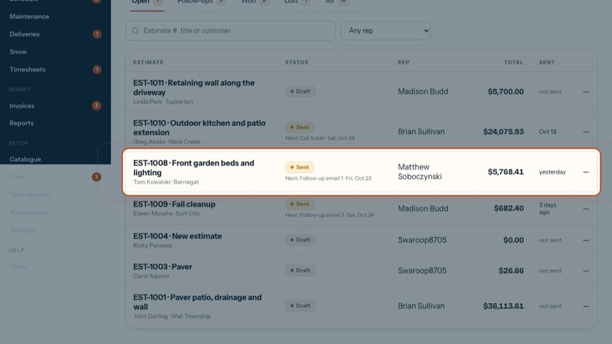
1Open the estimate
The one the customer answered. The tour opens this one.
-
 2
2They said yes
Press Won when they accept on the phone, by email or in person. It saves your changes first. The tour opens it to show you.
-
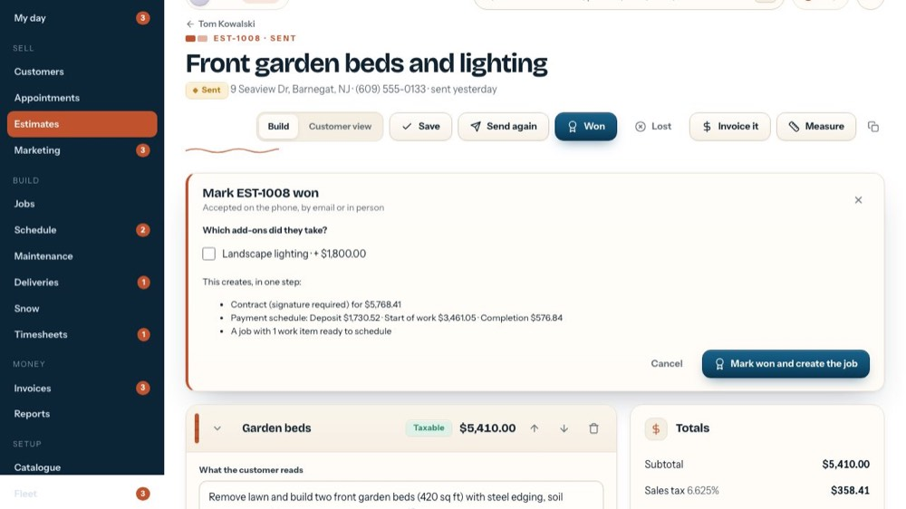
3Which add-ons they took
Tick each optional add-on they want. The contract total and the payments below change as you tick.
-
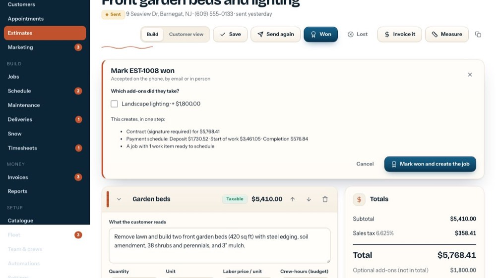
4What one step creates
The contract (signature required over the amount set in Settings), the payment schedule with each amount, and a job with one work item per section.
-
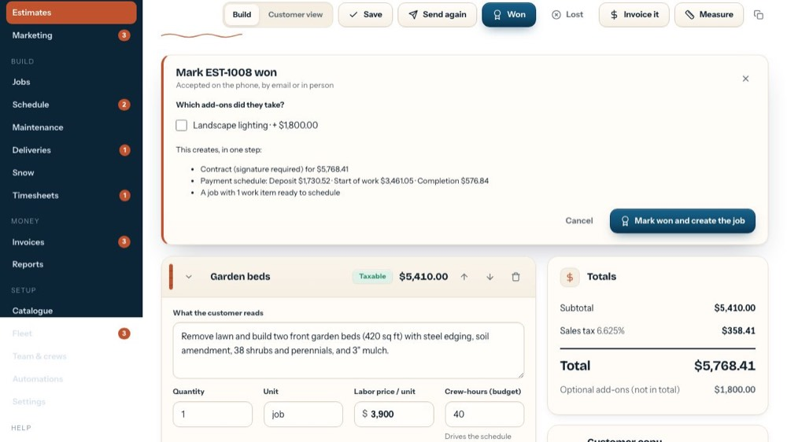
5Create the job
Press it when it's real: the job opens next and waits on the Schedule. The tour doesn't press it.
-
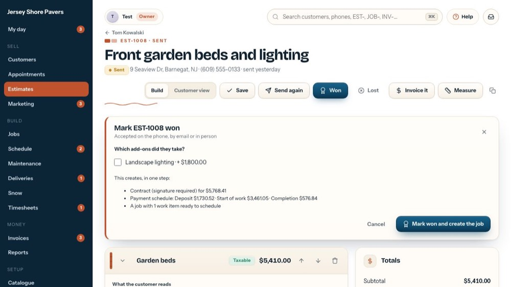
6Close
Cancel or the x closes it; nothing changes.
-
 7
7They said no
Lost asks why (price, went with someone else, timing / next year, no response, changed plans, other) plus details. It counts in the close rate.
-
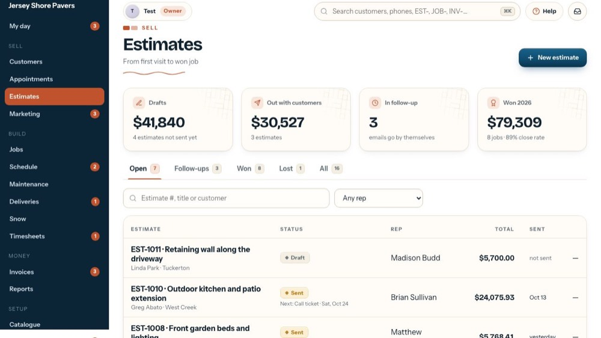
8Won estimates
Now one that was won.
-
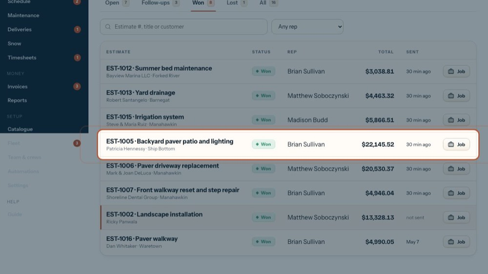
9Open a won estimate
The tour opens this one.
-
 10
10The won banner
When it was won and the job number. The job, the contract and the payment schedule were all made from it.
-
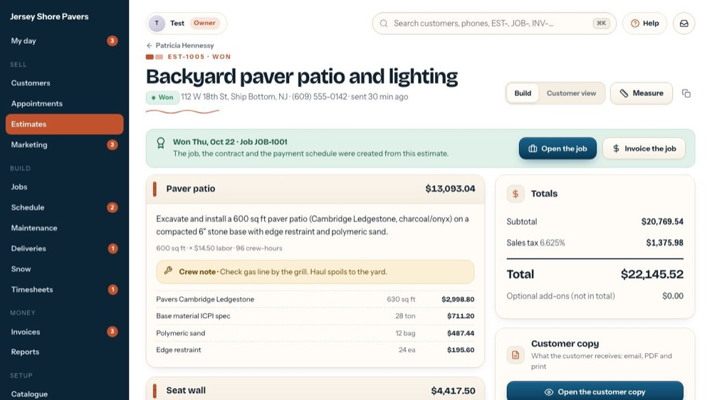
11Open the job
Goes to the job: schedule it, order materials, follow the payments.
-
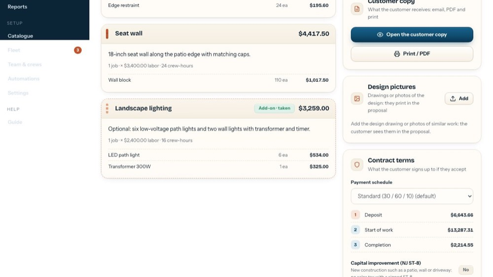
12A record now
A won estimate is locked: sections read as a record and each add-on says taken or not taken. Duplicate it if more work comes up.
-
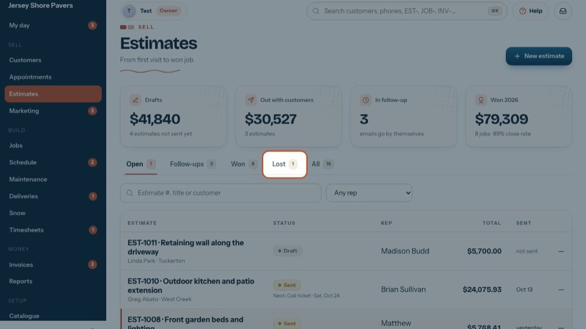
13Lost estimates
And one that was lost.
-
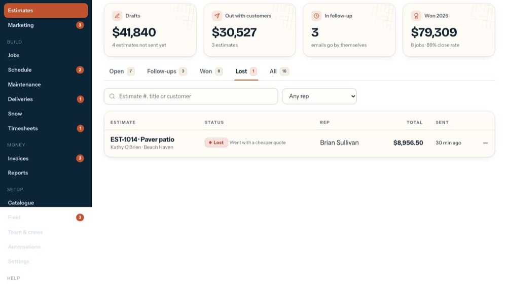
14Open a lost estimate
The tour opens this one.
-
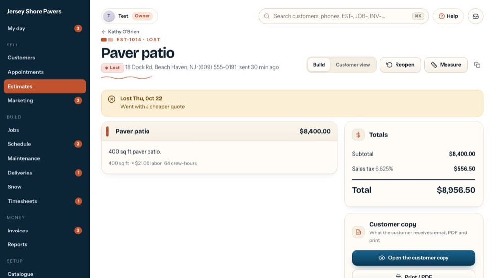
15Why it was lost
The day it was marked lost and the reason given.
-
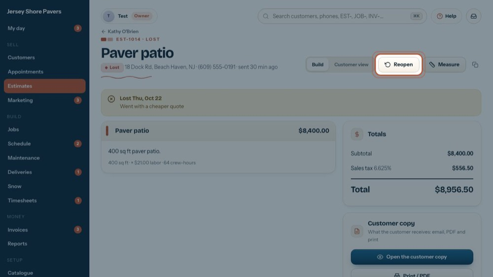
16Reopen
If they come back (or it expired), Reopen makes it a draft again so you can update it and send it. The tour doesn't press it.